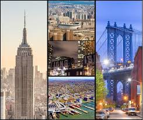

New York City is one of the best food cities in the world. Each borough has its own special food and culture because of all the different people who moved there from around the world.
From the coal-fired pizza of Brooklyn to the hand-pulled noodles of Flushing, Queens, you could eat something different every day for years and never run out of new things to try.
Food in New York is more than just eating — it shows you the cultures, stories, and people that make this city special.
| Borough | Famous Neighborhood | Known For |
|---|---|---|
| Manhattan | Harlem | Jazz, soul food, African-American history |
| Brooklyn | Williamsburg | Art galleries, live music, vintage shops |
| Queens | Flushing | Largest Chinatown in the US |
| The Bronx | South Bronx | Birthplace of hip-hop music |
| Staten Island | St. George | Arts district, the Staten Island Ferry |